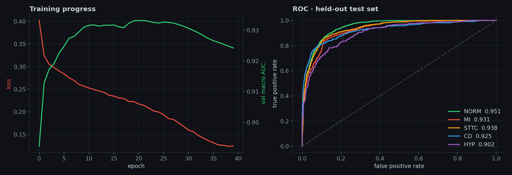
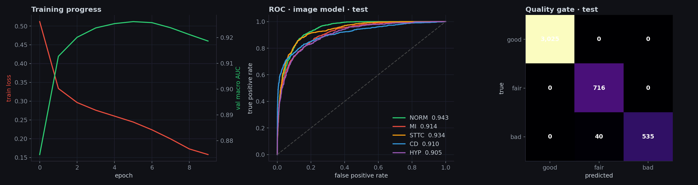
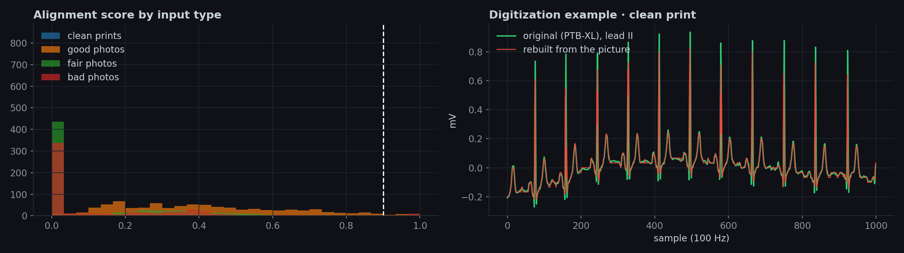
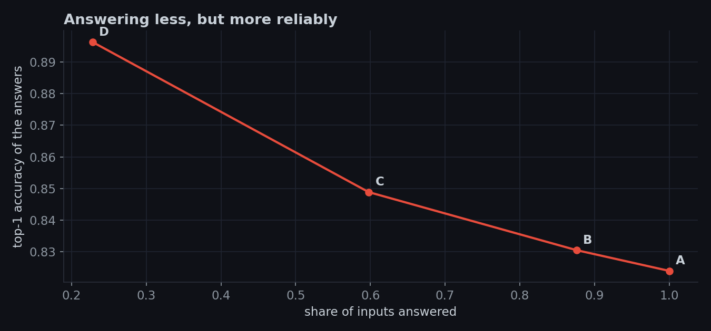
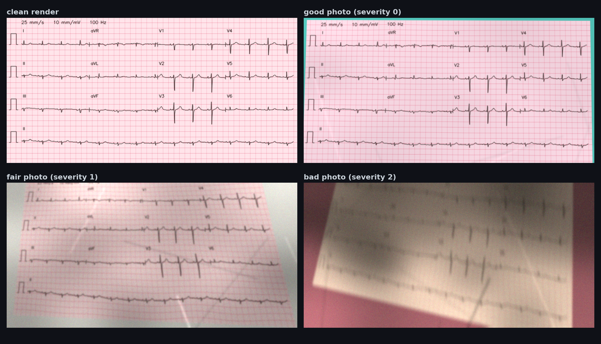

Upload a scan or a phone photo of a 12-lead ECG. Isoline checks the picture first, reads it two different ways, and asks for a better photo instead of guessing.
Choose or drop a picture of a 12-lead ECG and the Isoline image model runs right here in your browser. Nothing is uploaded to a server.
Or click an example from the test split:
Your result appears here. The model runs in your browser, nothing is uploaded.
python predict.py from the repository.Reliable The picture and the rebuilt waveform point to the same finding.
Uncertain The two checks disagree. Treat it as a rough hint and ask a clinician.
Image only The photo is readable but too tilted to rebuild the waveform, so only the image model answered.
Retake The photo is too poor to read safely. No answer is given.
These pictures were drawn at random from the test split (not hand-picked), and the results below are what the model returned, including its mistakes. Click a picture's report link to see the full one-page report.
Isoline works best on pictures like these examples. It was trained on rendered ECGs, not real clinic photos, and it is a learning project, not a medical device.
Most ECG tools assume a perfect input. Real ECGs arrive as crumpled printouts, shadowed phone photos and tilted scans, so Isoline's first question is "can I trust this picture?"
A quality gate rates the photo good, fair or bad. Bad photos stop here with a request to retake them.
An EfficientNet looks at the whole ECG picture and scores five patterns: normal, infarction, ST/T change, conduction disturbance and hypertrophy.
A digitizer traces the pen line of every lead and turns it back into millivolt signals.
A 1D CNN + Transformer reads the rebuilt signals. If both models agree, the answer is marked reliable. If not, it is flagged.
Grad-CAM heatmaps show where the image model looked, and a one-page report collects everything.
All numbers are measured on the held-out test split of PTB-XL (recordings from patients the models never saw during training).
| Class | Signal model (full 10 s) | Signal model (printout layout) | Image model |
|---|---|---|---|
| NORM | 0.951 | 0.947 | 0.943 |
| MI | 0.931 | 0.923 | 0.914 |
| STTC | 0.938 | 0.930 | 0.934 |
| CD | 0.925 | 0.923 | 0.910 |
| HYP | 0.902 | 0.904 | 0.905 |
| Macro average | 0.929 | 0.926 | 0.921 |
| When Isoline answers | Answers | Top-1 accuracy |
|---|---|---|
| A · answer every image | 100.0% | 82.4% |
| B · answer unless the quality gate rejects | 87.6% | 83.0% |
| C · B, but withhold when the two models disagree | 59.8% | 84.9% |
| D · answer only when both models agree | 22.8% | 89.6% |
Top-1 accuracy counts a prediction as right if it matches any of the patient's recorded labels. Rebuilding the waveform from the picture costs accuracy: the signal model drops from 0.926 AUC on perfect signals to about 0.814 on rebuilt ones, which is why the image model gives the final answer and the waveform path acts as a cross-check.





PTB-XL is a public collection of 21,799 clinical 12-lead ECGs (10 seconds each), annotated by cardiologists. We keep the 21,388 records that have a diagnosis and group the labels into five classes: NORM, MI, STTC, CD, HYP. We use the official split: folds 1-8 train, 9 validation, 10 test. Each record became two pictures: a clean printout and a simulated phone photo (tilt, shadows, creases, blur, noise, JPEG), 42,776 images in total.
Image model: EfficientNet-B0 with two heads (diagnosis and photo quality), 4.0 M parameters.
Signal model: residual 1D-CNN with squeeze-excite blocks and a 3-layer Transformer, trained on full signals and then adapted to the 2.5-second windows a printout actually shows.
Digitizer: classical computer vision, no learning.
git clone https://github.com/talhahSalman/isoline-ecg
cd isoline-ecg
pip install -r requirements.txt
python predict.py --image samples/ecg_01.jpg --report report.htmlThe repository contains the training notebook, the model code, the trained weights, example pictures and this website.